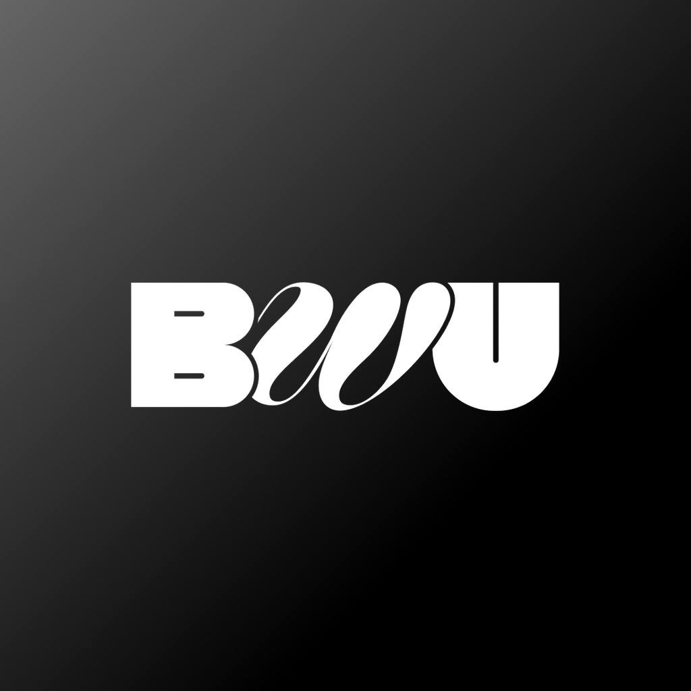
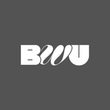
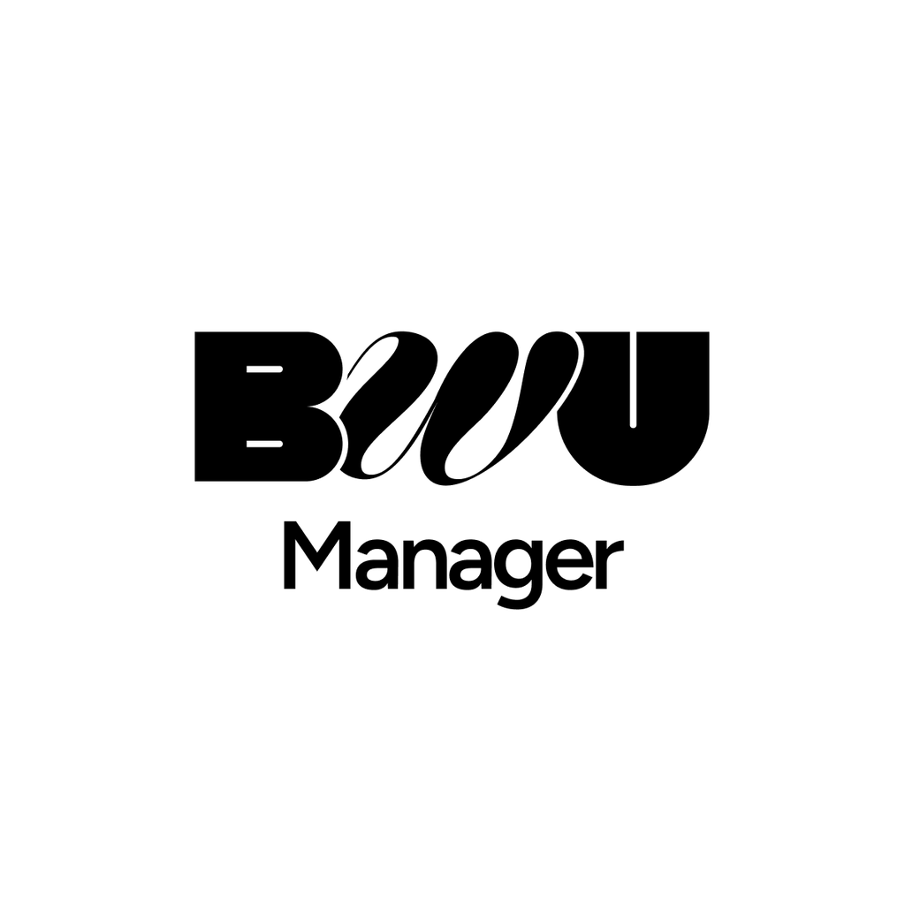
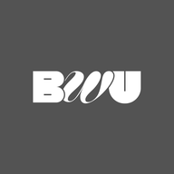
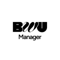

BWU App Icons — 実装ガイド
Figma Renewal_UI_Design のアイコンデザインから生成した、ユーザーアプリ・Web ホームアイコン・Manager (CMS) の 3 種のアイコン一式。全ファイルは Figma のベクターを 4x（1024px）で書き出したマスターからの縮小のみで、拡大補間は含みません。



01ロゴ倍率の方針
- 全プラットフォームで見た目のロゴサイズを統一しています。iOS・Android・favicon・Web ホームアイコンで同じ倍率を適用。
- 基準は Android アダプティブアイコンの 108dp レイヤー内に取る参照円 Ø70dp（= 0.648）。コンテンツのバウンディングボックス対角がこの円に内接する倍率を算出しています。
- Android の規定値は「保証セーフ円 Ø66dp」と「可視ビューポート 72dp」の 2 つ。Ø66dp 基準ではロゴが小さく見えたため Ø70dp を採用し（Ø66 比 +6.1%）、円マスクの実可視域 Ø72dp に対して 2dp のマージンを残しています。
- 背景は各アイコンとも全面のままで、中央のロゴのみを拡縮。
- 角丸は焼き込んでいません。iOS のスーパー楕円マスク、Android のランチャーマスクはシステムが適用します。
- すべてのサイズは 1024px マスターからの等比縮小のみ。サイズごとのデザイン差し替えはありません。
| デザイン | 倍率 | ロゴ幅（キャンバス比） | 最遠画素 / Ø72dp 半径 | |
|---|---|---|---|---|
| user-app | ×0.9266 | 0.670 → 0.621 | 139.2 / 144.0 px | |
 | web-home-icon | ×0.9266 | 0.670 → 0.621 | 165.2 / 204.8 px |
 | manager-cms | ×0.8510 | 0.670 → 0.570 | 136.2 / 144.0 px |
manager-cms のみ倍率が小さいのは、コンテンツに「Manager」の文字が加わって縦に高く＝対角が長くなるためです。BWU ロゴ単体ではなくブロック全体を参照円に収めています。「最遠画素」は 432px キャンバス（Web マスカブルのみ 512px・比較対象はマスカブルのセーフ円半径）での実測値で、いずれも可視域の内側です。
02iOS 実装
user-app/ios/ ／ manager-cms/ios/

Xcode
AppIcon.appiconset フォルダを Assets.xcassets にドラッグするだけで完了です。iPhone / iPad / App Store の全スロット（18 エントリ）と Contents.json を同梱しているため、Xcode 14 以降の単一 1024 方式・旧方式のどちらでもそのまま通ります。
Flutter（flutter_launcher_icons）
flutter_launcher_icons: image_path_ios: "assets/appicon/user-app/ios/icon-1024.png" remove_alpha_ios: true
| 用途 | デバイス | pt | 倍率 | px | |
|---|---|---|---|---|---|
| ホーム画面 | iPhone | 60 | @2x | 120 | |
| ホーム画面 | iPhone | 60 | @3x | 180 | |
| ホーム画面 | iPad | 76 | @2x | 152 | |
| ホーム画面 | iPad Pro | 83.5 | @2x | 167 | |
| Spotlight | iPhone / iPad | 40 | @2x | 80 | |
| 設定 | iPhone / iPad | 29 | @2x | 58 | |
| 設定 | iPhone | 29 | @3x | 87 | |
| 通知 | iPhone / iPad | 20 | @2x | 40 | |
| App Store | — | 1024 | @1x | 1024 |
03Android 実装
user-app/android/ ／ manager-cms/android/ の中身を app/src/main/res/ にそのままコピーしてください。

ファイル構成
app/src/main/res/
├─ mipmap-{mdpi,hdpi,xhdpi,xxhdpi,xxxhdpi}/
│ ├─ ic_launcher.png 48dp レガシー（API 25 以下）
│ ├─ ic_launcher_round.png 48dp 円形レガシー
│ ├─ ic_launcher_background.png 108dp アダプティブ背景レイヤー
│ ├─ ic_launcher_foreground.png 108dp アダプティブ前景レイヤー（透過）
│ └─ ic_launcher_monochrome.png 108dp Android 13+ テーマアイコン
├─ mipmap-anydpi-v26/
│ ├─ ic_launcher.xml
│ └─ ic_launcher_round.xml
└─ （別途）playstore/ic_launcher-playstore.png 512×512 — Play Console 用
mipmap-anydpi-v26/ic_launcher.xml
<?xml version="1.0" encoding="utf-8"?> <adaptive-icon xmlns:android="http://schemas.android.com/apk/res/android"> <background android:drawable="@mipmap/ic_launcher_background"/> <foreground android:drawable="@mipmap/ic_launcher_foreground"/> <monochrome android:drawable="@mipmap/ic_launcher_monochrome"/> </adaptive-icon>
背景がグラデーション／白ベタのため、values/ic_launcher_background.xml（単色リソース）ではなくビットマップの背景レイヤーを使っています。前景レイヤーのロゴは Ø70dp 参照円に内接し、円マスクの実可視域 Ø72dp の内側に収まっているため、どのランチャーのマスク形状でも欠けません。
| density | ic_launcher / _round | _background / _foreground / _monochrome |
|---|---|---|
| mdpi | 48 px | 108 px |
| hdpi | 72 px | 162 px |
| xhdpi | 96 px | 216 px |
| xxhdpi | 144 px | 324 px |
| xxxhdpi | 192 px | 432 px |
04favicon（ユーザーアプリのみ）
user-app/favicon/
<head> への記述
<link rel="icon" href="/favicon.ico" sizes="32x32"> <link rel="icon" href="/favicon.svg" type="image/svg+xml">
favicon.ico は 16 / 32 / 48 のマルチサイズ。favicon.svg はグラデーションとロゴパスをベクターで再現しており、統一倍率も transform で適用済みです。
05Web ホームアイコン
web-home-icon/ ※このアイコンのみ別デザイン（#545454 ベタ背景）です。
<head> への記述
<link rel="apple-touch-icon" sizes="180x180" href="/apple-touch-icon.png"> <link rel="manifest" href="/site.webmanifest"> <meta name="theme-color" content="#545454">
site.webmanifest
{
"name": "BWU",
"short_name": "BWU",
"icons": [
{ "src": "/web-app-icon-192.png", "sizes": "192x192", "type": "image/png", "purpose": "any" },
{ "src": "/web-app-icon-512.png", "sizes": "512x512", "type": "image/png", "purpose": "any" },
{ "src": "/web-app-icon-maskable-512.png", "sizes": "512x512", "type": "image/png", "purpose": "maskable" }
],
"theme_color": "#545454",
"background_color": "#545454",
"display": "standalone",
"start_url": "/"
}
マスカブル版はロゴがセーフ円（中央 80%）の内側に十分収まっているため、原寸のまま出力しています。apple-touch-icon は 120 / 152 / 167 / 180 の各サイズを同梱。
06ダウンロード
07ソース
| デザイン | Figma ノード |
|---|---|
| ユーザーアプリ | Renewal_UI_Design / 11792-54804 |
| Web ホームアイコン | Renewal_UI_Design / 11912-35397 |
| Manager (CMS) | Renewal_UI_Design / 11559-31142 |